GEOMETRY LAB / LIVE STATUS
One catalog.
Three answers.
100 synthetic CAD-Acid zones. Click a tile to inspect three synchronized live 3D views. Missing geometry stays missing.
ZONE CATALOG
Explore the geometry
Strict follows the frozen v1 rules (PASS and predeclared REFUSED_EXPECTED). Practical additionally counts only rule-cited TOLERANT behavior; it never accepts a changed solid as correct. DISPUTED remains in the 100-zone denominator. The V0 solids below are illustrations, not declared-variant verdict evidence.
wonky / Rust
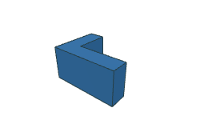
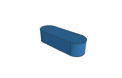
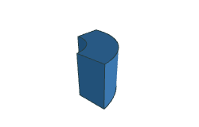
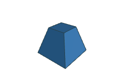
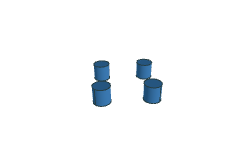
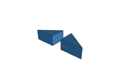
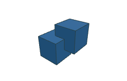
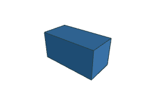
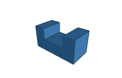
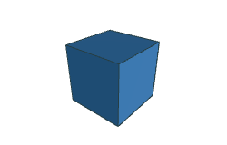
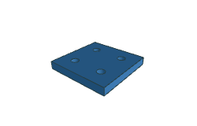
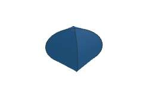
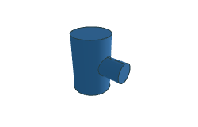
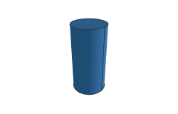
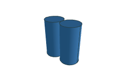
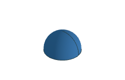
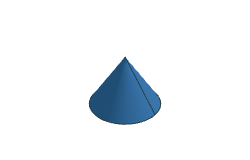
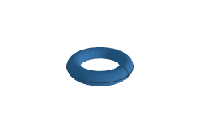
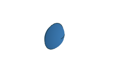
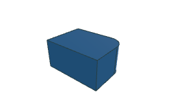
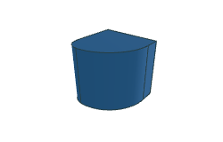
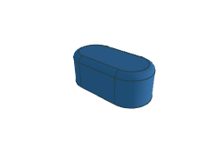
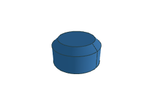
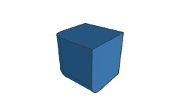
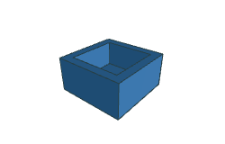
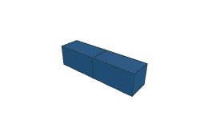
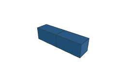
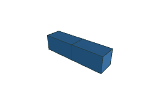
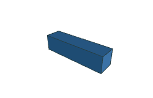
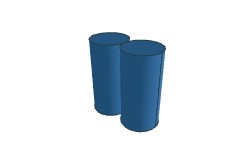
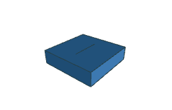
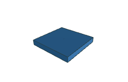
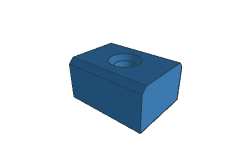
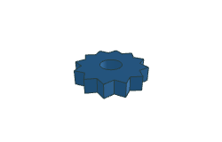
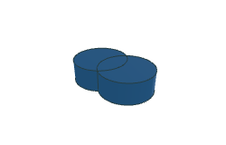
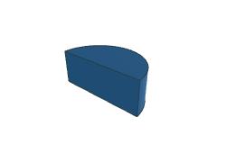
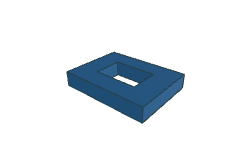
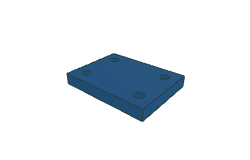
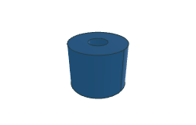
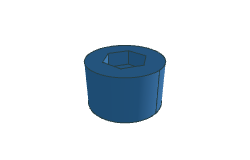
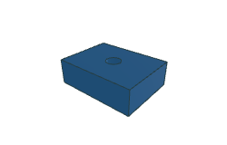
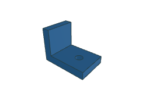
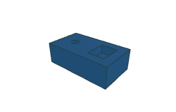
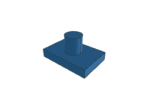
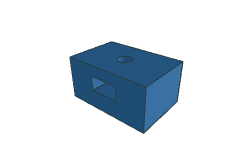
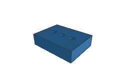
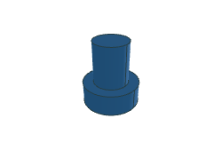
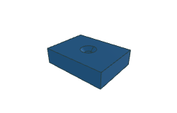
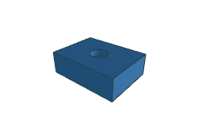
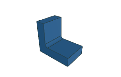